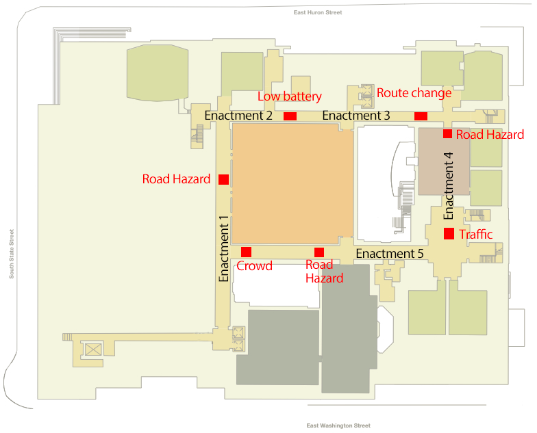
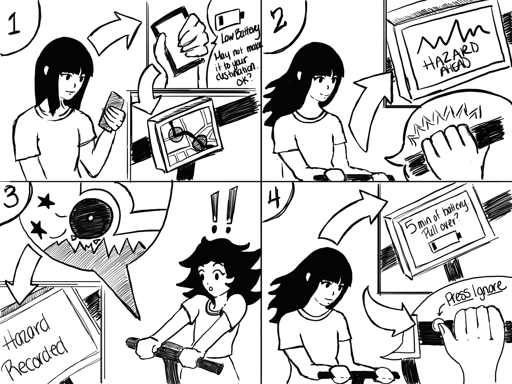

Milestone 3
Experience Prototyping Results and Demo Plans
Introduction
At the end of Milestone 2, we were able to narrow down the scope of our project to improve the safety of e-scooters through the addition of screen-based UI and sensors. Although we liked the idea of a heads up display (HUD), our population surprisingly liked the simplicity of incorporating something they already have with them instead of needing to rent or share new parts.
With this in mind, we proposed three solutions that focused on different ways to present hazard alerts to riders. We still had an idea for a HUD design, but with the project scope in mind, we decided to focus only on screen-based UI for Milestone 3.
Study Design
Overview
Our user enactments took place in the North Quadrangle basement floor. We set up the course outline using tape and used cardboard boxes to represent hazards in the road. We recruited four participants from our social networks (both experienced and novice at riding electric scooters) to enact five scenarios. After we took each participant through a scenario, we would stop to debrief and ask questions about their experience, opinions, and suggestions.
To design the scenarios for our study, we focused on the intersection of three variables:
Level of Automation: How much the technology “does the work” for the rider and what agency it exhibits in decision-making for the rider
Scale: new/experienced/deviation
Experience level: How perficient at riding an electric scooter is the rider and in what context
Scale: new/experienced/deviation
Riding Situation: In what context the electric scooter ride is occuring
Scale: tourist/work or school
We chose these dimensions based on our findings from our survey, interviews, and diary study as we felt they represent most use cases in our target demographic.
Research Questions
Through our scenarios, we set out to answer four main research questions:
- What are the moment-to-moment concerns of riders during their rides?
- How do riders react in the moment to hazards or hazardous situations?
- How do rider’s actions/reactions differ between new, expert, and deviation scenarios?
- How much do riders rely on navigation applications and how does that differ between experience levels and use scenarios?
We hypothesized that riders would prefer using their phone versus an embedded screen in most cases, but particularly in cases where navigation is a priority (likely new, deviation, and tourist scenarios). We also predicted that new riders would be more accepting of interruptions via automation (e.g. automatic braking or navigation rerouting) when paired with informative alerts letting them know why. And although we want to design a solution that provides riders with automated safety features, we thought that experienced riders will be less accepting of interruptions and automation even when paired with alerts and informative text.
Setup
For our study, we used the North Quadrangle basement floor to construct a rough obstacle course for riders in order to simulate a sidewalk ride with hazards such as potholes and curbs. We provided a manual scooter with a prototype built-in screen and phone holder. One team member acted as the “scooter” in cases where automation was involved.
Materials: manual children’s scooter, paper prototype screens designed on Sketch, cardboard screen holder, cardboard boxes, construction paper, painter’s tape
Course: North Quadrangle basement level, starting and ending at the Student Lounge
Team member roles: facilitator, notetaker, scooter controller, photographer/videographer
Scenarios
Scenario 1: You’re visiting a new city and you’ve decided to meet a friend at a new restaurant.
Features: Navigation with suggestions, automatic braking, hazard warning screen
Scenario 2: You’re sightseeing in another city and you’ve decided to visit one of the city’s main tourist attractions.
Features: Navigation input, low-battery warning, safe stop redirection
Scenario 3: You work full-time about 15 minutes away from your house. You normally drive there but you decide to save time and take an electric scooter because some of the roads are under construction.
Features: Mid-ride rerouting, hazard warning screen
Scenario 4: You’re a student and you normally walk to class, but today you’re running late so you decided to take a scooter. Even though you know how to get to the building you’re not sure which way is best on a scooter so you input the address into the scooter navigation.
Features: Alternate route suggestion, hazard warning screen
Scenario 5: You’re on your way to class, but you’ve ridden this route all semester so you know the way. There have been some storms and construction lately so there may be some obstacles.
Features: Phone mount option, hazard warning screen
Participants
For this study, we recruited participants with varying levels of experience with electric scooters. Our participants were all students at the University of Michigan, so their experiences riding scooters in a crowded city were similar.
Debriefing
After we took each participant through a scenario, we would stop to debrief and ask questions about their experience, opinions, and suggestions. Some questions we asked included:
- What concerns did you have during your ride?
- Did you feel that our solution addressed these concerns?
- If not, how important is it to you that our solution does address them?
- How did you feel about [feature]? Did it make you feel safe?
- Did you find [feature] helpful? If not, what would you prefer?
Study Results
We gained some highly valuable insights through conducting these enactments. One of the main overarching themes was that riders want to maintain control over what the scooter does and warns them about, with the scooter helping them out but not making any major decisions for them. Most riders appreciated being notified about potholes, congested/closed routes, and low battery, but did not find warnings about obvious hazards such as pedestrians to be helpful since they would already be easily visible. One rider even remarked ‘let me find out for myself’ regarding poor pavement conditions as well.
While some riders liked having the scooter automatically slow down when hazards were detected, riders did not respond favorably to having the scooter come to a complete stop. Other riders were not particularly comfortable with any level of automatic braking, with most agreeing that it would be confusing and startling if it happened without sufficient warning, particularly to a new user unfamiliar with the system. One rider was also concerned about whether the scooter would automatically speed back up after having passed the hazard.
Regarding low battery, all riders appreciated the notifications, but also ignored the scooter’s instructions to change route and park in a safe spot, preferring to continue on toward their destination for as long as the scooter would last. Riders stated that it would be more convenient for the scooter to warn that it did not have enough battery power the finish the route before beginning the ride, or that scooters with low batteries should not even show up as available on the map. One rider remarked that he understood why having the scooter reroute was a good idea from a business perspective, but that from a customer’s perspective it felt as though he had lost control. Riders were more open to the idea of rerouting due to congested, damaged, or closed routes, although still wanted the option to ignore the alternate route suggestions.
While one of the most common pieces of feedback we got from our interviews was that participants wanted the option to mount their smartphones on their scooters, we found that this is not as desirable of a feature in practice as it is in theory. During the enactments involving a phone clip on the handlebars, several of our riders were worried that the mount would not be secure enough and their phones would fall off while in motion. (Our first rider even initially remarked that she’d prefer to just use her phone instead of have the built-in screen, until she got to the enactment that did have her use her phone.)
Our riders were also worried about having to look down so far from the road ahead to see the screen (whether it is a built-in screen or a mounted phone). While the viewing angle on a full-size scooter would not be quite as steep as it was on the child-sized scooter we used for the enactments, this is an issue that we will attempt to address through a haptic alert system, as our riders gave rather mixed feedback on the idea of incorporating sound.
Ideation and Selection
Before beginning our user enactments, we had made the decision to narrow down the scope of our project to just include screen-based UI, and we let go of the idea of a HUD. With this in mind, we still needed to make decisions about the following:
- Sensor type
- Crowdsourced information vs. real time data collection
- 1 hazard cue vs. multiple cues (screen, haptics, audio)
- Phone vs. built-in screen
- Required navigation input vs. optional navigation input
- Including an auto-braking feature
In order to make these decisions, we examined each of them based on user feedback, technological feasibility of implementing the design, and project scope. As a group, we reviewed the data from our enactments and had conversations about the pros and cons with our designs. The criteria that really came into play aside from user data was technical feasibility and making sense of exactly how the components could work together in a real product. We discussed the limitations of technology and how context would affect each of the components.
System Proposal
Our system concept uses sensors, crowdsourcing technology, haptic feedback, and a built-in screen to alert scooter drivers about potential safety hazards. We believe this concept could be built within 5 years. All of the components already exist. The bulk of the time would be needed to build the crowdsourcing algorithm.
Sensors
Built-in accelerometer sensors on the scooter would record vibrations, which would be used to infer road hazards like rough terrain. Accelerometers would also sense changes in speed in order to predict traffic patterns. Radar sensors would be used to detect oncoming vehicles such as cars or other bikes.
Crowdsourcing
Aggregated data from the accelerometers in many scooters would be used to alert drivers about real-time road conditions and traffic. An algorithm would analyze the data to determine the likelihood of a real hazard or traffic back-up so that one-off events would not trigger alerts for all users. Users could also manually add icons to indicate hazards they’ve encountered.
Haptic Feedback
Our system includes two levels of haptic alerts, depending on the alert type. Any time a safety alert is triggered, such as a potential collision or upcoming terrain issue, the user would feel a 1 second vibration in the handlebars. With this feedback the driver would know to increase awareness of their surroundings without needing to take their eyes off the road. A short vibration would be used for non-safety alerts such as traffic and low battery warnings. This way drivers would always be notified about problems during their ride, and still easily distinguish between critical and non-critical alerts.
Built-in Screen
Our concept includes a built-in screen that serves two main purposes. (1) It would work seamlessly with the user’s scooter rental app so that a driver could input their destination on their phone app and see the navigation on the scooter screen. (2) The built-in screen would describe the alerts provided by haptic feedback.
Interaction with built-in screen
Since it would not be safe for a user to take their hands off the handlebars and touch the built-in screen, we also plan to include a button on the handlebars that drivers can use for screen interactions such as dismissing alerts.
Demo Proposal
We will build a medium-fidelity prototype and use a scripted demonstration with group members to show a scooter encountering four problems:
- An expected road hazard
- An unexpected road hazard
- An expected traffic hazard that is no longer present
- A low battery
Props
- An adult-sized non-electric scooter
- 2 “road hazards” made from boxes and construction paper
- A smartphone attached to the scooter to simulate a built-in screen
- Figma prototype of navigational screens and alerts for the built-in screen; this will be controlled on a laptop using screen mirroring
- A way to show the audience the built-in screen; we are exploring the following options: GoPro, screen mirroring, or a slide deck
- Button on scooter to simulate interaction with screen
- TOTOT vibrating mini motor discs with programmed “Wizard of Oz” controls to simulate haptic feedback from safety alerts
Script
Scene 1: User rents scooter and puts in destination on phone. This simulates the seamless interaction between the scooter rental app and the built-in screen on the scooter.
Scene 2: User inputs their destination into the app. The scooter screen displays a low battery alert and predicts the time remaining before it needs to be charged. The user estimates they can reach the destination in time and dismisses the alert. This will demonstrate via “Wizard of Oz” how the scooter button can dismiss an alert on the built-in screen.
Scene 3: A Figma prototype showing navigation is displayed on the scooter screen. Icons show the likely hazards on the route. This simulates the crowdsourced data gathered from scooter sensors.
Scene 4: User starts driving. When the user approaches first hazard on the route we will simulate haptic feedback in the handlebars with a programmed vibration motor and “Wizard of Oz.” The phone screen will display information about the hazard. Once the user has safely passed the hazard the screen returns to navigation.
Scene 5: User continues riding and encounters unexpected rough terrain. It causes the scooter to shake and the user has to slow down while driving over it.
Scene 6: The user receives a second low battery alert indicating the scooter has less than 5 minutes of battery life remaining. The user dismisses this alert using the handlebar button.
Scene 7: User arrives at their destination safely. The screen indicates that it detected the unexpected hazard and recorded it. This simulates how the accelerometer sensors record data and notify the user.
Storyboard
Limitations
While we hope our demonstration will clearly show how our concept could work if it were a finished product, we are limited in several aspects. First, we don’t own an electric scooter, so we’re using a kick scooter. Considering how fast electric scooters go, it wouldn’t be wise to use one in an indoor demonstration anyway. Secondly, we can’t demonstrate fully functional sensors because we don’t have the right technology or skills capable of prototyping with them at a higher fidelity. This means we have to fully script the demonstration, including what hazards will be encountered. Thirdly, we are limited in the types of hazards we can demonstrate indoors. We chose to simulate rough terrain and traffic hazards because of their feasibility; demonstrating how a scooter driver reacts to an oncoming car might be more convincing, but much less feasible. Our demonstration will seem less realistic due to these factors, but we believe it will still show how our concept addresses a range of potential hazards.
Conclusion
Our project began with many concepts for how to improve electric scooter safety. Now that we have surveyed and interviewed scooter drivers, run a diary study, and conducted user enactments we gathered enough data to narrow our focus and refine our ideas down to one concept. Scooter drivers are most worried about road conditions or other safety hazards they can’t easily see. They don’t want to take their eyes off the road, and they’re afraid of damaging their smartphones. To address these needs, our final concept used crowdsourcing technology to provide drivers with advance warning of hazards. We used haptic feedback in the handlebars so that drivers don’t need to take their eyes off the road in order to process a safety alert. We also used a built-in screen that works seamlessly with the driver’s smartphone. Now that we have one concept that addresses our users’ needs, our next steps are to build the prototype and practice our demonstration.